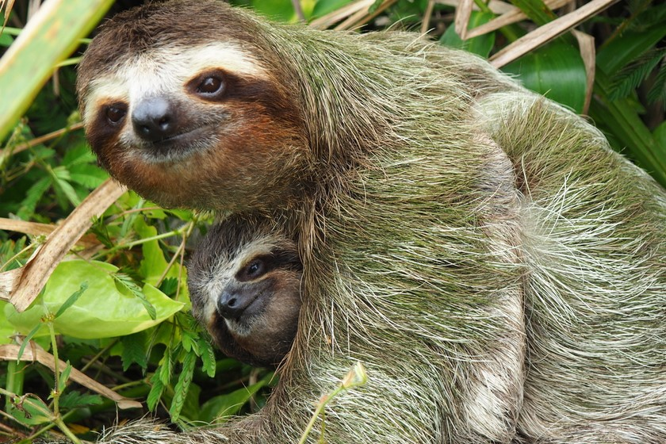

ზარმაცასებრნი (ლათ. Bradypodidae) — ძუძუმწოვრების ოჯახი არასრულკბილიანების რიგისა. მათი სხეულის სიგრძეა 50-64 სმ, წონა 4-7 კგ.წინა კიდურები უკანაზე გრძელი აქვთ. თითები ცელისმაგვარი ბრჭყალებით ბოლოვდება. სხვა ძუძუმწოვრებისაგან განსხვავებით, ზარმაცასებრნს კისრის 6-9 მალა და 14-24 წყვილი ნეკნი აქვთ. სხეული დაფარულია მორუხო-მურა ბეწვით და ხშირად მომწვანო ელფერი დაჰკრავს, რადგან ბეწვში ბინადრობენ ლურჯ-მწვანე მიკროსკოპული წყალმცენარეები.
